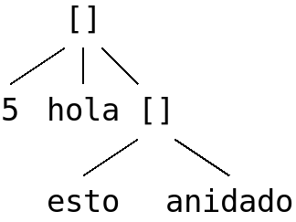

1.2.1. Lenguajes de serialización de datos¶
Ya se ha explicado que los lenguajes de serialización de datos están especialmente diseñados para la transmisión y el almacenamiento de datos estructurados, por lo que resultan más adecuados para esta tarea que los lenguajes de marcas, aunque éstos últimos hayan sido usados (probablemente hasta el abuso) durante años.
Trataremos la sintaxis de tres lenguajes (aunque quizás sería recomendable añadir la de TOML, muy útil para crear archivos de configuración).
1.2.1.1. CSV¶
Es un formato centrado en la representación de datos en columnas y está descrito en el RFC 4180. Es muy simple y sus principales reglas son las siguientes:
Es un formato de texto, aunque no hay forma de definir el sistema de codificación, por lo que su elección deberá realizarse en los procesos de importación y exportación.
Los datos están estructurados en registros, cada uno de los cuales ocupa una línea. Los cambios de línea deben estar codificados tal como se hace en sistemas MS-DOS, o sea, con los dos caracteres \r\n (
CRLF)[1]Cada registro, a su vez, se divide en campos separados entre sí por un delimitador. El delimitador es habitualmente una coma, pero no necesariamente, por lo que definir cuál es deberá hacerse en los procesos de exportación e importación.
Todos los registros deben contener el mismo número de campos.
Opcionalmente, el primer registro, puede ser un registro de cabecera que contenga los nombres de los campos. No hay forma de notar que este primer registro es de cabecera, por lo que su interpretación debe especificarse en el proceso de importación.
Los campos, en general, no necesitan entrecomillarse (con comillas dobles) a menos que contenga un carácter que distorsione la lectura: el delimitador, el cambio de línea o la propia comilla doble.
En un campo entrecomillado, si el texto contiene un carácter de comilla doble este debe representarse con dos caracteres seguidos de comilla doble.
Ejemplo:
Campo 1,Campo 2,Campo 3,Campo 4
1,2,3,4
a,b,c,d e
"a,b",c,d,e
"a""b",c,d,e
1.2.1.2. JSON¶
Este lenguaje nació como forma de representar objetos en Javascript, por lo que su aspecto guarda bastante parecido con ellos. Muy probablemente por esta filiación con el lenguaje de programación se usa habitualmente en la transmisión de datos entre servidor y cliente web, tarea en la que ha desplazado casi por completo a XML.
Dedicaremos el resto del epígrafe a describir cuál es la sintaxis del lenguaje, para lo cual nos vendrá muy bien tener a mano algún validador que nos permita comprobar si un documento cumple con tal sintaxis:
Validador JSON online, que nos permite hacer las comprobación con un navegador y conexión a internet.
El paquete python3-demjson disponible en las distribuciones basadas en Debian, que proporciona la librería demjson de Python y un ejecutable llamado jsonlint, cuyo uso es muy sencillo:
$ jsonlint documento.json # Solo comprueba si es bien formado documento.json: ok $ jsonlint -f documento.json # Además de la comprobación, lo reformatea.
En los principales sistemas operativos, podemos usar Visual Studio Code, que tiene soporte nativo para JSON y será capaz de comprobar según se escribe, si el documento sigue las reglas generales.
Advertencia
Aunque hemos usado la palabra validador, por ahora no pensamos validar el documento con estos programas, sino solamente comprobar si si es bien formado.
Para familiarizarnos con el aspecto de estos documentos y poder probar las
herramientas anterior, facilitamos un documento JSON que enumera los profesores de un centro educativo con
los casilleros que tienen asignados:
JSON sobre casilleros
{
"centro": "IES Pepe Botella",
"profesores": [
{
"id": 1,
"apelativo": "Luis",
"nombre": "Luis",
"apellidos": "Márquez Vázquez",
"departamento": "Educación Física"
},
{
"id": 13,
"apelativo": "Cristina",
"nombre": "María Cristina",
"apellidos": "Prieto Monagas",
"departamento": "Biología y Geología"
},
{
"id": 15,
"apelativo": "Manolo",
"nombre": "Manuel",
"apellidos": "Páez Robledo",
"departamento": "Matemáticas"
},
{
"id": 17,
"casillero": [17, 43],
"apelativo": "Lucía",
"nombre": "Lucía",
"apellidos": "Gálvez Ruiz",
"departamento": "Inglés"
},
{
"id": 17,
"casillero": [28],
"apelativo": "Migue",
"nombre": "Miguel Ángel",
"apellidos": "Campos Sanchez",
"departamento": "Historia"
},
{
"id": 81,
"casillero": [],
"apelativo": "Vero",
"nombre": "Verónica",
"apellidos": "Martín Díaz",
"departamento": "Biología"
},
{
"id": 86,
"sustituye": 15,
"apelativo": "Roberto",
"nombre": "Roberto",
"apellidos": "Mínguez Torralbo"
}
]
}
Las ideas que inspiran este documento son las siguientes[2]:
De cada profesor incluimos algunos datos que nos resultan relevantes.
Si no se expresa el apelativo, es que se le nombra con su nombre de pila.
Los profesores titulares, al darse de baja, pueden ser sustituidos por otro.
Los profesores deben pertenecer a un departamento, a menos que sean un sustituto, en cuyo caso pertenecerá forzosamente al departamento del profesor al que sustituye.
En principio los profesores tiene casillero, pero:
Si no se expresa el de un profesor titular, el casillero coincidirá con su identificador (p.e. el profesor 10 tiene el casillero 10).
Los sustitutos no pueden expresar el casillero, porque forzosamente usarán el del titular al que sustituyen.
Un profesor puede disponer de varios casilleros, así que ese campo debe ser una lista.
Si la lista está vacía, el profesor ha renunciado a tener casillero.
1.2.1.2.1. Estructura¶
Básicamente los datos en un documento JSON se estructuran en nodos. Un nodo representa un dato de uno de estos supertipos:
Escalar, que es un dato constituido por un único valor.
Secuencia (o array), que es un dato constituido por una colección ordenada de nodos. Por ejemplo:
[5, "hola", true]
Los nodos contenidos en la secuencia no tienen por qué ser escalares, lo que provoca que haya anidación. Por ejemplo:
[5, "hola", ["esto", "anidado"]]
Tiene esta estructura de nodos:
Mapa (u objeto), que es una colección ordenada de parejas clave-valor:
{ "nombre": "Pedro Martínez Álvarez", "edad": 32, "casado": true }
Como en el caso de las secuencia, los valores pueden ser nodos de cualquier tipo, lo que provoca anidación:
{ "nombre": "Pedro Martínez Álvarez", "edad": 32, "casado": true, "hijos": [ "Felipe", "Sonsoles" ] }
Nota
Los objetos pueden tener parejas clave-valor absolutamente arbitrarias. Las reglas generales de JSON, simplemente, indican cómo deben escribirse los datos y de qué tipo pueden ser (en nuestro ejemplo, el dato «nombre» es una cadena; «edad», un número; y «casado», un valor lógico). Es obvio que para resolver un determinado problema, el documento JSON que usemos tendrá que recoger unos determinados datos relevantes con lo que ni las claves ni sus valores podrán ser arbitrarios. Por tanto, esto exige, además de las reglas generales que expondremos ahora, definir una gramática particular que permita validar el doccumento.
1.2.1.2.2. Reglas básicas¶
Conocida su estructura, las reglas básicas son:
Un archivo o flujo de datos sólo puede contener un documento JSON.
Cada documento JSON esta constituido por un único nodo mapa o un único nodo secuencia (al que, por supuesto, pueden estar anidados más nodos).
No pueden escribirse comentarios.
No hay reglas estrictas para el uso del espaciado, de modo que lo mismo da no usar ninguno, uno o varios. Por lo tanto, este JSON:
{"nombre":"Pedro Martínez Álvarez","edad":32,"casado":true}
es equivalente al primero que expusimos, aunque bastante menos legible porque hemos prescindido de todos los espacios. Dependiendo si queremos privilegiar la legibilidad o el ahorro en el tamaño, podremos usar más o menos espacios.
Por carácter de espaciado se entiende el propio espacio, el cambio de línea (\n), el retorno de carro (\r) o la tabulación.
El resto de reglas dependen de cómo se expresan los tipos datos, de modo que proseguiremos con ellos.
1.2.1.2.3. Tipos de nodos¶
Los tipos existentes en JSON son:
- Cadena
Es un escalar que debe estar encerrado entre comillas dobles (las simples no valen). Si en la propia cadena hay alguna comilla doble, podemos escaparla para evitar que el procesador la interprete como el final de la cadena:
"Juan Martín Díez, \"el Empecinado\"".
- Número
Es un escalar que representa:
Enteros (p.e.
25).Coma flotante (p.e.
123.54) que usan como separador el punto.Coma flotante en notación científica (p.e.
2.5e-6,2.5E-6,2.5e6,2.5e+6).
- Lógico (o booleano)
Como en Javascript este tipo escalar se expresa con
true(verdadero) ofalse.
- Nulo
Este tipo escalar sólo tiene un posible valor que es
nully representa la ausencia de valor.
- Array
Un array es una colección ordenada de datos de cualquiera de los tipos posibles. Aunque habitualmente todos sus elemenetos son de un mismo tipo, no es obligado que sea así. Para notarlo, debe encerrarse la colección entre corchetes (de apertura [ y de cierre ]) y usar como separador de elementos la coma. Por ejemplo:
[ 25, "cadena", null, 1.2e-6, false, [1, "s"], {"a": 1, "b": null} ]
Como ocurre con los arrays de todos los lenguajes, para referir los disintos elementos se usa el índice de posición (empezando en 0). Por ejemplo, el valor nulo que está en la tercera posición, se refiere usando usando el índice 2.
- Objeto
Un objeto es una colección desordenada de parejas clave-valor. Tiene las siguientes características:
Para notarlo, se debe encerrar la colección entre llaves de apertura ({) y cierre (}).
Como separador entre parejas clave-valor, se usa la coma.
Como separador entre clave y valor se usa «:».
Las claves sólo pueden ser de tipo cadena[3].
Cada clave dentro de un mismo objeto debe ser única.
Los valores pueden ser de cualquier tipo.
Ejemplo:
{ "a": null, "b": [1, "x", 2.5e+5], "c": { "ca": "xxx", "cb": false } }
No hay más tipos de datos válidos, por lo que faltan los tipos de Javascript para valores indefinidos (undefined) y para funciones (function). Un ejemplo más completo de un documento JSON puede ser:
{
"nombre": "Pedro Martínez Álvarez",
"edad": 32,
"casado": true,
"direccion": {
"calle": "Trujillo",
"numero": 22
},
"nacimiento": "1991-08-25",
"defuncion": null,
"hijos": [
"Felipe",
"Sonsoles"
]
}
Ver también
Puede echarle un ojo a la definición formal de su grámatica.
1.2.1.3. YAML¶
YAML (página web oficial) es otro lenguaje de serialización que, como JSON, construye su estructura de datos basándose en el concepto de nodo (escalar, de secuencia o de mapa), lo que permite que en principio puedan compartir nichos de uso. En la práctica YAML se usa más para la escritura de archivos de configuración y JSON para la transmisión de datos entre servidor y cliente[4]. Su última especificación es YAML 1.2.2.
Un ejemplo sencillo de este tipo de documentos es:
%YAML 1.2
---
# Este hombre es muy amigo mío.
nombre: Pedro Martínez Álvarez
edad: 32 # Empieza a ser un puretilla ya.
casado: true
o, si queremos uno más amplio, equivalente al ejemplo introductorio para JSON:
YAML de casilleros
%YAML 1.2
---
centro: "IES Pepe Botella"
profesores:
- id: 1
apelativo: Luis
nombre: Luis
apellidos: Márquez Vázquez
departamento: Educación Física
# Este profesor es sustituido por el 86.
# Como no se indica, su casillero es el 13.
- id: 13
apelativo: Cristina
nombre: María Cristina
apellidos: Prieto Monagas
departamento: Biología y Geología
- id: 15
apelativo: Manolo
nombre: Manuel
apellidos: Páez Robledo
departamento: Matemáticas
# Ocupa varios casilleros.
- id: 17
casillero: [17, 43]
apelativo: Lucía
nombre: Lucía
apellidos: Gálvez Ruiz
departamento: Inglés
# Ocupa un casillero distinto al de su ID.
- id: 17
casillero: [28]
apelativo: Migue
nombre: Miguel Ángel
apellidos: Campos Sánchez
departamento: Historia
# No tiene asignado casillero.
- id: 81
casillero: []
apelativo: Vero
nombre: Verónica
apellidos: Martín Díaz
departamento: Biología
# Es sustituto, así que tiene
# los mismos casilleros y departamento
# que aquel al que sustituye.
- id: 86
sustituye: 13
apelativo: Roberto
nombre: Roberto
apellidos: Mínguez Torralbo
Como en el caso de JSON nos resultará enormemente útil validadores:
YAMLLint online, que nos permite comprobar si un documento YAML es bien formado mediante un navegador y una conexión a red.
El programa de Linux yamllint que en las distribuciones basadas en Debian se encuentra en el paquete homónimo (yamllint).
Como en el caso de JSON, Visual Studio Code es capaz de comprobar sobre la marcha, si el documento es bien formado. En este caso, el soporte no es nativo y hay que añadirlo a través de la extensión YAML.
1.2.1.3.1. Estructura¶
Un archivo o un flujo de información está constituido por uno o más documentos
YAML que se separan a través de tres guiones seguidos (---). La
estructura de cada documento es:
#Directivas para el procesador (empiezan por %), como por ejemplo:
%YAML 1.2
---
#
## Contenido del documento
#
...
Se pueden distinguir, pues, cuatro componentes:
El contenido del documento que es el único indispensable. Por tanto, podrías tener un archivo YAML con sólo contenido si solo estuviera constituido de un documento y no requiriéramos especificar directivas.
La marca inicial
---, que señala el inicio del contenido. Sólo es neceseria si queremos especificar directivas o incluir varios documentos en un mismo archivo.Las directivas que afectan al documento que se escribe a continuación. Estas directivas sirven para guiar al procesador encargado de analizarlo.
La marca final
...(tres puntos), que señala explicitamente el final del contenido y es opcional.
Por tanto, podríamos encontrarnos con un archivo así:
# Directivas para el documento 1.
%YAML 1.2
---
#
## Documento 1
#
#... La marca final no es indispensable.
# Directivas para el documento 2.
%YAML 1.2
---
#
## Documento 2
#
Obsérvese que en cualquier momento podemos incluir comentarios anteponiéndolos con una almohadilla (#) tal como se hacen en la shell de Linux. Como en ella, el comentario puede ocupar una línea completa o encontrarse al final de una línea de datos (como ocurre en la línea del primer ejemplo correspondiente al dato de la edad).
1.2.1.3.2. Directivas¶
Se notan anteponiéndoles el carácter % y sirven para dirigir el análisis del procesador. Por ahora, la especificación sólo definido dos:
%YAMLque identifica la versión usada de la especificación (1.0, 1.1 ó 1.2).
%TAGQue define notaciones abreviadas para etiquetas. Lo trataremos en el epígrafe sobre Etiquetas (tags).
1.2.1.3.3. Contenido¶
El contenido esta constituido por un único nodo, como en el caso de JSON, pero a diferencia de éste, también es válido un nodo escalar. Por tanto, esto es un YAML válido:
1
o sea, un documento que serializa únicamente un número entero. Ahora bien, ¿por qué esto es un número? ¿Por qué en el primer ejemplo se identifican cadenas, números y valores lógicos? La explicación nos la proporcionan los esquemas.
1.2.1.3.4. Esquemas¶
Hasta ahora los nodos que hemos incluido en nuestros ejemplos son nodos sin etiquetar o, siendo más precisos, son nodos etiquetados implícitamente, puesto que las etiquetas permiten definir de qué tipo es el nodo. Al no declararse explícitamente ninguna, el procesador deduce el tipo de dato dependiendo de cómo se hubiera escrito. Por ejemplo:
---
num: "1"
cadena: 1
En este ejemplo, hay cinco nodos:
El raíz que constituye el contenido del documento y que se deduce que es un objeto por incluir a continuación dos parejas clave-valor sin guiones que las antecedan.
Los dos nodos clave, que se deduce que son cadenas, por ser caracteres alfanuméricos.
Los dos nodos valor, el segundo de los cuales es un entero, por contener un entero; y el primero de los cuales es una cadena, porque, aunque contiene un entero, se ha entrecomillado.
Sin embargo, podríamos haber hecho explícita la declaración de tipos mediante el uso de etiquetas:
--- !!map
!!str num: !!int "1"
!!str cadena: !!str 1
y en este caso, el procesador no hará suposiciones en función de cómo vea escritos los datos, sino que forzará que el tipo sea aquel indicado por la etiqueta explícita:
El nodo raíz es un objeto (
map).La clave «num» es una cadena (
str).El valor asociado a «num» es un entero`(
int).La clave «cadena» es una cadena (
str).El valor asociado a «cadena» es una cadena (
str).
De hecho, si pasáramos a un procesador un documento como éste:
--- !!int
x
estaríamos forzando a que el nodo fuera un entero. Pero, como «x» no es un entero válido, el procesador debería provocar un fallo. En cualquier caso, profundizaremos en la etiquetas más adelante; ahora nos centraremos en el concepto de esquema:
Un esquema en YAML es un conjunto de etiquetas y un mecanismo para resolverlas. Los procesadores deben implementar un esquema, aunque la especificación define tres:
- Failsafe schema (o sea esquema a prueba de fallos)
Es un esquema que sólo reconoce tres tipos: secuencias, mapas y cadenas.
- JSON schema
Es un esquema que implementa al menos los tipos existentes en JSON. Por tanto, añade a los anteriores los tipos null, entero, flotante y lógico.
- Core schema (o sea, esquema básico)
Es un esquema que no añade tipos al anterior, sino que, simplemente, amplia el modo en que se pueden escribir algunos tipos de datos. Por ejemplo,
null(y sólonull) se entenderá como el tipo nulo en el esquema JSON y si escribieramos alguna variante comoNULLse entenderá siempre como una cadena. Sin embargo, en este esquema también puede escribirse este dato comoNull,NULLo dejar el valor vacío.Ver también
Échele un ojo a cuáles son todas las extensiones en la especificación.
Un procesador debería como mínimo implementar el primero de los esquemas, pero lo habitual es que implemente un esquema que extienda el esquema básico.
1.2.1.3.5. Tipos¶
Analicemos los tipos incluidos dentro de los esquemas de YAML (entre paréntesis se indica cuál es la etiqueta que los identifica):
- Enteros (
int) Pueden escribirse:
Decimales como
-123.Octales como
0o10(core schema)Hexadecimales como
0x1a(core schema).
- Numeros en coma flotante (
float) Tiene también varias expresiones:
La habitual con punto separador
123.45.En notación científica
1.25e+5[5])Valores infinitos:
.infy-.inf(core schema).No es un número:
.nan[6] (core schema).
- Lógicos o booleanos (
bool) Como en Javascript (y JSON) se representan con
trueyfalse.
- Nulo (
null) Es la ausencia de valor y se escribe
null.
- Cadenas (
str) Las cadenas. a diferencia de JSON, no necesitan escribirse entrecomilladas, aunque si se hace pueden usarse comillas simples o dobles. Las implicaciones de unas y otras es ligeramente diferente (véase en la especificación la explicación dedicada al entrecomillado doble):
a: "esto es una cadena" "x y": también lo es esto num: 2 # Esto se interpreta como número, no una cadena. no num: "2" verdad: Las cadenas se entrecomillan con " o '. lamismaverdad: "Las cadenas se entrecomillan con \" o '."
Nota
El procesador procura adivinar el tipo del dato, por lo que un 2 no entrecomillado (como el caso de la clave «num» del ejemplo) se interpreta como un entero y no como una cadena. Por la misma razón,
falseonullsin entrecomillar tampoco se consideran cadenas. Entrecomillados esos valores, sin embargo, sí será cadenas.Cuando las cadenas son largas[7], hay también modo de escribirlas cómodamente:
larga: | Este cadena contiene varias líneas que conservan los cambios de línea tal y como se escriben. otralarga: > Esta cadena convierte los cambios de línea en espacios, pero transforma una línea en blanco en un cambio de línea.
Además de estos tipos de datos escalares, existen los que definen colecciones. En JSON eran los objetos y los arrays y en YAML también, aunque existe algún otro:
- Array (
seq) Las colecciones ordenadas (reléase lo expuesto para los arrays en JSON) se notan con guiones:
- uno - 2 - true - - array dentro de array - 1.24e-5 - null
Nota
Para anidar (el cuarto elemento es, a su vez, un array) se usa el sangrado mediante caracteres de espaciados[8]. No hay ninguna regla sobre cuántos son apropiados, pero debe ser consistente. En el ejemplo, como se han usado tres para el primer elemento "array dentro de un array", por lo que el segundo también de ser sangrado con otros tres. Este elemento también habría sido posible haberlo escrito así:
- - array dentro de array - 1.24e-5
Además de esta notación, existe otra que es exactamente la misma que la usada en JSON. Por tanto, también es válido haber escrito el dato anterior como:
[ "uno", 2 true, [ "array dentro de array", 1.24e-5 ], null ]
o una mezcla de ambas notaciones como:
- uno - 2 - true - [ array dentro de array, 1.24e-5 ] - null
- Mapa u objeto (
map) Las colecciones ordenadas de parejas clave-valor se notan no colocando guiones y utilizando como separador la secuencia de dos caracteres
::uno: 1 dos: 2 tres: # Array anidado como valor. - a - b - true cuatro: null cinco: # Mapa anidado como valor. x: equis y: y griega
Sin embargo, también pueden notarse usando la notación de JSON:
{ "uno": 1, "dos": 2, "tres": ["a", "b", true], "cuatro": null, "cinco": {"x": "equis", "y": "y griega"} }
Tanto las claves como los valores pueden ser un nodo de cualquier tipo.
Nota
Llegados a este punto, podemos hacer notar un hecho muy importante: todo lo que se expresa con JSON, puede expresarse con YAML y, además, puede expresarse del mismo modo, por lo que YAML es un superconjunto de JSON o, lo que es lo mismo, todo documento JSON es un documento YAML bien formado.
Hay otra forma alternativa de escribir los mapas (bastante menos usada por ser menos legible) que consiste en colocar la clave en una línea anteponiéndole un
?y colocar en el siguiente el valor anteponiéndole un:. Por ejemplo:? nombre : "Pedro Martínez Álvarez" ? edad : 32 ? casado : true
Además de estos tipos incluidos en el esquema básico, existen otros que suelen implementar los procesadores:
- Conjunto
Es una secuencia desordenada, que se nota usando el carácter de interrogación (
?) en vez del guión:? xxx ? yyy ? zzz
En el fondo, equivale equivale a un mapa, los valores de cuyas claves son todos nulos:
xxx: null yyy: null zzz: null
Nota
En realidad, la notación con
?no es nueva, ya que en el esquema básico, la ausencia de valor puede entenderse comonully acabamos de ver que el?puede introducir una clave, si el valor no se expresa en la misma línea que la clave.
- Binario
Aunque YAML es una representación de datos en texto plano, este tipo de dato permite incluir valores binarios. Para lograrse deben codificarse los datos binarios en base64:
%YAML 1.2 --- nombre: "Pedro Martínez Álvarez" edad: 32 casado: true avatar: !!binary | PD94bWwgdmVyc2lvbj0iMS4wIiBlbmNvZGluZz0iVVRGLTgiPz4KPHN2ZyB4bWxucz0iaHR0cDov L3d3dy53My5vcmcvMjAwMC9zdmciIHdpZHRoPSI5MDAiIGhlaWdodD0iNjAwIj4NCjxyZWN0IGZp bGw9IiNmZmYiIGhlaWdodD0iNjAwIiB3aWR0aD0iOTAwIi8+DQo8Y2lyY2xlIGZpbGw9IiNiYzAw MmQiIGN4PSI0NTAiIGN5PSIzMDAiIHI9IjE4MCIvPgo8L3N2Zz4=
En este ejemplo, la codificación es la representación SVG de la bandera de Japón:

- Fecha (
date) El tipo permite definir fechas de calendario:
nombre: "Pedro Martínez Álvarez" edad: 32 casado: true nacimiento: 1991-05-07
Obsérvese que el formato es
AAAA-MM-DD.- Marcas de tiempo (
timestamp) Permite definir un instante de tiempo concreto en distintos formatos:
zulu: 2022-09-01T15:29:32.321Z iso8601: 2022-09-01T17:29:32.321+02:00 spaced: 2022-09-01 21:59:32.321 +2
Los dos primeros ejemplos son iguales con la única diferencia de que el primero es la hora zulú (notado por la «Z»); y el segundo la local con expresión del huso horario. El tercer ejemplo, es bastante parecio pero separa los tres componentes (fecha, hora y uso horario mediante espacios).
1.2.1.3.6. Referencias¶
Las referencias (o anclas) permiten referir el valor de un nodo dentro de otro. Pueden crear referencias tanto a escalares:
- nombre: &pedro "Pedro Martínez Álvarez"
edad: 32
casado: true
- nombre: "María Martínez Cansado"
edad: 2
casado: false
padre: *pedro # El valor de "padre" es el nombre de Pedro.
como a arrays:
comun: &jugadores
- Manolo
- Paco
- María
futbol: *jugadores
baloncesto: *jugadores
como a mapas:
- &pedro
nombre: "Pedro Martínez Álvarez"
edad: 32
casado: true
- nombre: "María Martínez Cansado"
edad: 2
casado: false
padre: *pedro # El valor de "padre" es el mapa completo de Pedro
En el caso de mapas, la referencia a un mapa se puede añadir a la definición de otro para añadir a éste las parejas clave-valor del primero:
defaults: &defaults
sgbd: mysql
host: localhost
mrbs:
nombre: aulas
<<: *defaults
wordpress:
nombre: wp
<<: *defaults
1.2.1.4. Ejercicios resueltos¶
Diseñar un documento JSON y su equivalente YAML que almacene recetas de cocina, de manera que:
Cada receta está constituida por ingredientes que deben citarse, así como la cantidad de cada uno de ellos.
Para cada receta, debe indicarse también cuál es el tiempo total de preparación.
De cada ingrediente en cada receta debe indicarse también cuál es la unidad en la que se mide. Por ejemplo, en alguna receta se necesitarán 200 gramos de tomate, pero en otra bastará con indicar dos piezas.
Solución propuesta JSON
[ { "nombre": "ensalada", "tiempo": 5, "ingredientes": [ {"nombre": "tomate", "unidad": "pieza", "cantidad": 2}, {"nombre": "cebolla", "unidad": "pieza", "cantidad": 0.25}, {"nombre": "lechuga", "unidad": "gramo", "cantidad": 150}, {"nombre": "sal", "unidad": "gramo", "cantidad": 2}, {"nombre": "aceite", "unidad": "ml", "cantidad": 6}, {"nombre": "vinagre", "unidad": "ml", "cantidad": 3} ] }, { "nombre": "bocadillo de anchoas", "tiempo": 4, "ingredientes": [ {"nombre": "pan", "unidad": "pieza", "cantidad": 1}, {"nombre": "anchoa", "unidad": "pieza", "cantidad": 3} ] } ]
Solución propuesta YAML
%YAML 1.2 --- - nombre: ensalada tiempo: 5 # El tiempo es en minutos. ingredientes: - nombre: tomate unidad: pieza cantidad: 2 - nombre: cebolla unidad: pieza cantidad: .25 - nombre: lechuga unidad: gramo cantidad: 150 - nombre: sal unidad: gramo cantidad: 2 - nombre: aceite unidad: ml cantidad: 6 - nombre: vinagre unidad: ml cantidad: 3 - nombre: bocadillo de anchoas tiempo: 4 ingredientes: - nombre: pan unidad: pieza cantidad: 1 - nombre: anchoa unidad: pieza cantidad: 3
Tomando como referencia el documento anterior, escriba otro que enumere la red de restaurantes de una cadena, de cada uno de los cuales se refiera:
El nombre, dirección postal y teléfono.
Si acepta pedidos a domicilio.
Las recetas que tiene en carta cada restaurante y en qué formato las ofrecen al público (tapa, media ración o ración). Por supuesto, varios restaurantes pueden ofrecer la misma receta.
Solución propuesta JSON
{ "recetas": [ { "nombre": "ensalada", "tiempo": 5, "ingredientes": [ {"nombre": "tomate", "unidad": "pieza", "cantidad": 2}, {"nombre": "cebolla", "unidad": "pieza", "cantidad": 0.25}, {"nombre": "lechuga", "unidad": "gramo", "cantidad": 150}, {"nombre": "sal", "unidad": "gramo", "cantidad": 2}, {"nombre": "aceite", "unidad": "ml", "cantidad": 6}, {"nombre": "vinagre", "unidad": "ml", "cantidad": 3} ] }, { "nombre": "bocadillo de anchoas", "tiempo": 4, "ingredientes": [ {"nombre": "pan", "unidad": "pieza", "cantidad": 1}, {"nombre": "anchoa", "unidad": "pieza", "cantidad": 3} ] } ], "cadena": [ { "nombre": "El tragón feliz", "tlfo": 956010203, "direccion": { "via": "calle Callo, nº25. Bajo", "municipio": "Vallecito Frondoso", "cp": 12345 }, "carta": [ { "plato": "ensalada", "formato": ["tapa", "media", "racion"] }, { "plato": "bocadillo de anchoas", "formato": ["media", "racion"] } ] } ] }
Solución propuesta YAML
%YAML 1.2 --- recetas: - nombre: &ensalada ensalada tiempo: 5 # El tiempo es en minutos. ingredientes: - nombre: tomate unidad: pieza cantidad: 2 - nombre: cebolla unidad: pieza cantidad: .25 - nombre: lechuga unidad: gramo cantidad: 150 - nombre: sal unidad: gramo cantidad: 2 - nombre: aceite unidad: ml cantidad: 6 - nombre: vinagre unidad: ml cantidad: 3 - nombre: &bocanchoas bocadillo de anchoas tiempo: 4 ingredientes: - nombre: pan unidad: pieza cantidad: 1 - nombre: anchoa unidad: pieza cantidad: 3 cadena: - nombre: El tragón feliz tlfo: 956010203 direccion: via: calle Callo, nº25. Bajo municipio: Vallecito Frondoso cp: 12345 carta: - plato: *ensalada formato: - tapa - media - racion - plato: *bocanchoas formato: - media - racion
Enlaces de interés
Procesador online de YAML, útil para comprobar cómo interpreta el procesador nuestras pruebas.
Ejemplo comentado de un documento YAML, útil para comprobar de un vistazo la sintaxis de los tipos más habituales de nodos.
Un tutorial que ilustra las principales características de YAML.
Notas al pie